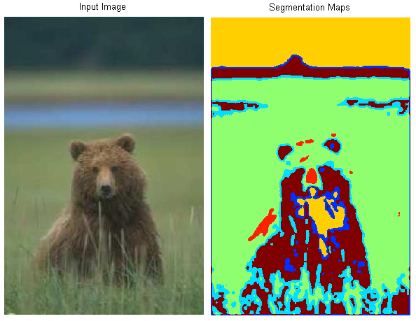

Parallelizing Borůvka's Algorithm and Applying it to Image Segmentation
By Kathleen Fuh and Shreya Vemuri
Summary
We plan to parallelize Borůvka’s algorithm for finding minimum spanning trees and plan to optimize its performance on a CPU using OpenMP and on a GPU using CUDA. We hope to analyze and optimize the performance of our implementations and apply it to image segmentation. While we acknowledge the existence of current approaches to parallelize this algorithm, we hope to use those ideas to find an implementation that best suits the machines we end up using
Background
A spanning tree of a connected, undirected graph G with vertex set V and edge set E is a connected subgraph of G that includes all vertices of G and exactly |V|-1 edges. When given a connected, weighted, undirected graph, the minimum spanning tree (MST) is a spanning tree with minimum total edge weight.
The key property that drives many MST algorithms is the light edge property. This property states that for any cut of a connected, undirected, weighted graph G, the edge with minimum weight that crosses the cut must be in the MST.
Borůvka’s algorithm is a well-known parallel algorithm for finding MSTs. It makes use of the light edge property by observing that the minimum weight edge incident on any vertex v must be in the MST (the cut of the graph in this case partitions the graph into one set containing the single vertex v and a second set containing the rest of the graph). This observation introduces an axis of parallelism along vertices because edges in the MST can be selected in parallel by looking at each vertex. Using this idea, Borůvka’s algorithm works as follows
While there are still edges:
- Find the minimum weight edge incident on each vertex (these edges will form at least one connected component)
- Contract each connected component, creating a new super vertex for all vertices in the component
- Remove all self edges of the super vertex
- Add the minimum weight edge between super vertices to the MST and remove all other redundant edges.
Ideas for axes of parallelism include parallelizing over the components or over the vertices within each time step of the algorithm. It will also be interesting to explore other axes of parallelism such as edges when the number of components in the graph is large. Borůvka’s algorithm can also be implemented using star contraction which we hope to incorporate into our algorithm once we are ready to implement image segmentation which uses that method.
Image segmentation is the process of partitioning a digital image into many sets of pixels with the intent to reduce the image to a simpler form, making it easier to analyze. It makes use of Borůvka’s algorithm by treating every pixel as a vertex with some assigned credit indicating how “segmented” that part of the image will be in the final result. Each edge and corresponding weight represents the difference of pixel color of the two vertices that are at the endpoints. Using contraction based on edge weights, credits are reassigned, and edges are filtered. This process continues until no edges are left over.
An example is given in the image below:
Challenges
One of the challenges in this project will be to determine how to represent the connected components in the graph. We will have to implement a union-find data structure (or something similar to it) in order to keep track of these sets. Borůvka’s algorithm requires modifying this data structure in order to keep track of super vertices and edges in our MST, so one challenge will be in parallelizing this step, and avoiding race conditions. We saw a similar issue in assignment 3 where we had to minimize the number of atomic sections that we had when using OpenMP in order to see good speedup. Another issue in CUDA will be in figuring out how to best assign the work for each thread block, and how to best utilize shared memory in the cases with large graphs.
Additionally, neither of us have experience in image processing so representing, modifying, and displaying the images may serve as a challenge. We are excited to learn some more about image processing. It will be fun to see this real-world application run on CPUs and GPUs while putting the knowledge we have learned about parallelism this semester to use.
Resources
We will be using the Gates machines. We will be basing our sequential and parallel code off of the pseudocode provided in 15-210’s notes. This is a very basic starting point to provide structure as their notes are catered towards functional programming. We will also have to design a union-find data structure (or something similar) and look into graph contraction algorithms.
Goals & Deliverables
By the end of the project, we plan to achieve the following:
- A working baseline sequential Borvůka implementation
- A parallel algorithm for the CPU and a parallel algorithm for the GPU
- Relative linear speedup with the number of cores on a CPU up to some point
By the end of the project, we hope to achieve the following:
- A GPU implementation that achieves a speedup close to that of the CPU
- An application of the algorithm to image segmentation (if time permits - right now, it is in our schedule to do so)
By the end of this project, we plan to demo the following:
- Graphs depicting the performance of our sequential algorithm versus the performance of our implementations on a CPU versus on a GPU. We also would like to show graphs comparing performance on a varied number of cores for a CPU in order to determine what the optimal number of cores is on the CPU for some given graph
- Results of image segmentation on some chosen pictures
Platform Choice
We will be coding in C++ and parallelizing with OpenMP for the CPU implementation and with CUDA for the GPU implementation. We chose these platforms so we can see how the technologies we used in class this semester can be used in real-life applications. Based on past homework assignments such as assignment 3 that also involved parallelizing graph algorithms, we think these platforms will be sufficient for the workload of our implementation. We are also using our plan of developing with two different technologies as a process for learning why certain choices on particular machines make more sense for the workload we have chosen.
Schedule
| Week | Plan |
| April 4 - April 10 | Implement sequential version of Borůvka |
| April 11 - April 17 | Parallel implementation of Borůvka on CPU using OpenMP |
| April 18 - April 24 | Parallel implementation of Borůvka on GPU using CUDA |
| April 25 - May 1 | Apply implementations to image segmentation |
| May 2 - May 8 | Analysis of results/buffer window/presentation preparation |